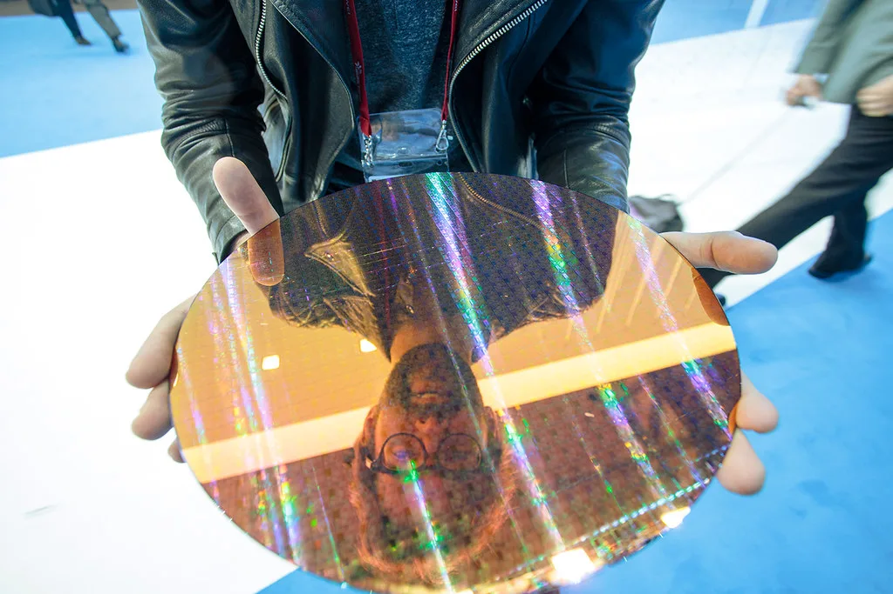
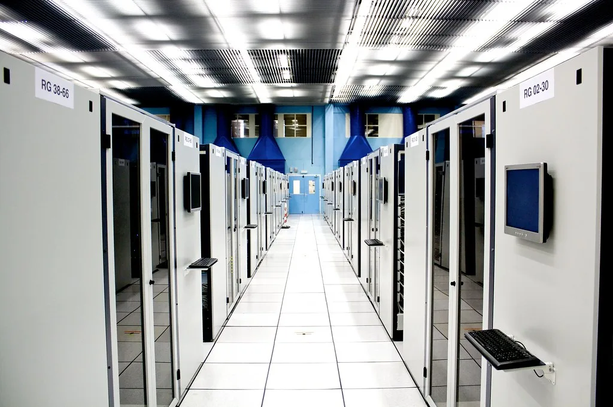

SK하이닉스가 올해 3분기 연결 기준 매출 104조6155억원, 영업이익 83조3338억원을 기록했다고 28일 공시했다. 분기 매출이 100조원을 넘어선 것은 창사 이래 처음이며, 영업이익 역시 역대 최대치를 새로 썼다. 영업이익률은 80%에 달해 매출 100원 중 80원이 이익으로 남은 셈이다. 순이익도 39조7756억원으로 순이익률 38%를 기록했다. 지난해 같은 기간과 비교하면 매출은 327.9%, 영업이익은 632.1% 늘어난 수치로, 메모리 업황 호황이 숫자로 뚜렷하게 확인된 분기였다. 분기 매출이 연간 매출을 거론할 때나 쓰던 '100조원'이라는 단위에 도달했다는 점에서, 시장에서는 이번 실적을 단순한 호실적을 넘어 메모리 산업의 체급 자체가 달라졌다는 신호로 받아들이는 분위기다.
실적을 끌어올린 핵심 동력은 고대역폭메모리(HBM)였다. 회사 측은 차세대 제품인 HBM4 출하가 본격화되면서 D램 부문 실적 성장을 견인했다고 설명했다. 여기에 서버용 DDR5 판매도 큰 폭으로 늘어나면서 데이터센터 고객사向 고부가가치 제품 비중이 한층 커졌다. 글로벌 빅테크 기업들의 인공지능(AI) 인프라 투자 경쟁이 메모리 수요로 그대로 이어지는 모습이다. 특히 엔비디아 등 AI 가속기 업체들이 차세대 GPU에 맞춰 HBM4 공급을 서두르면서, SK하이닉스를 비롯한 메모리 업체들의 협상력도 한층 강화된 것으로 평가된다.

낸드플래시 부문에서도 성장세가 이어졌다. 321단 TLC(트리플레벨셀) 기반 기업용 솔리드스테이트드라이브(eSSD) 판매가 확대되면서 데이터센터용 고용량 저장장치 수요를 흡수했다. D램에 집중됐던 호황이 낸드 영역까지 번지고 있다는 점에서, 메모리 업황 전반의 회복세가 당분간 이어질 수 있다는 관측이 나온다.
SK하이닉스는 이번 사상 최대 실적을 바탕으로 대규모 주주환원 계획도 함께 내놓았다. 2026 회계연도 기준으로 현금배당 30조원 이상, 자사주 매입 및 소각 60조원 이상 등 총 100조원 규모의 환원을 추진한다는 방침이다. 메모리 업종 특유의 실적 변동성 우려를 달래고 주가 부양 의지를 보여주려는 조치로 풀이된다.

앞서 경쟁사인 삼성전자 역시 올해 3분기 영업이익이 사상 처음 100조원대에 이를 것이라는 전망이 시장에서 나온 바 있어, 이번 분기는 국내 양대 메모리 기업이 나란히 '분기 영업이익 100조원 시대'를 여는 상징적인 시기로 기록될 가능성이 커졌다. 업계에서는 이번 실적이 단순한 '깜짝 호실적'을 넘어 AI發 메모리 슈퍼사이클이 본격 궤도에 올랐음을 보여주는 신호로 받아들이는 분위기다. 다만 최근 글로벌 증시에서 AI 관련주에 대한 '거품론'이 반복해서 불거진 만큼, 투자 심리가 지나치게 낙관으로 쏠리는 것을 경계해야 한다는 목소리도 함께 나온다.
SK하이닉스의 호실적은 국내 증시 전반에도 영향을 미치고 있다. 반도체 업종 전체에 대한 투자 심리가 개선되면서 관련 공급망 기업들의 주가 흐름에도 관심이 쏠리는 상황이다. 회사는 다음 분기에도 HBM4 공급 확대와 서버용 메모리 수요 증가세가 이어질 것으로 전망하면서, 설비투자 역시 수요에 맞춰 탄력적으로 조정해 나가겠다는 입장을 밝혔다. 메모리 가격 상승과 공급 부족이 당분간 이어질 것이라는 전망이 우세한 가운데, 시장은 다음 분기 실적 발표에서도 이번과 같은 고점 경신이 이어질지 주목하고 있다.